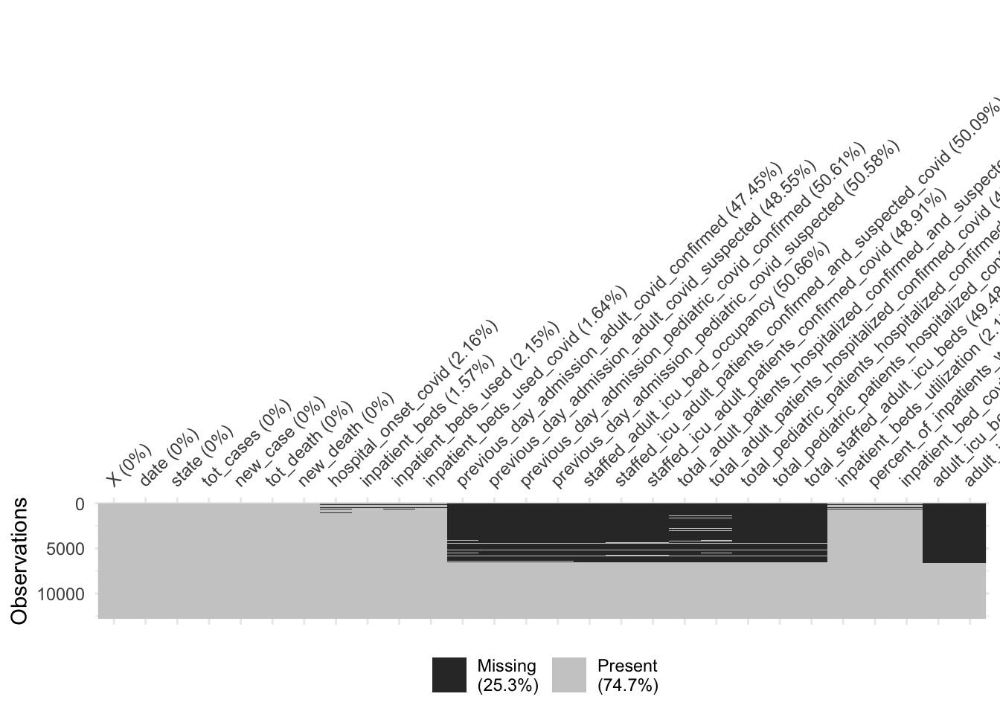
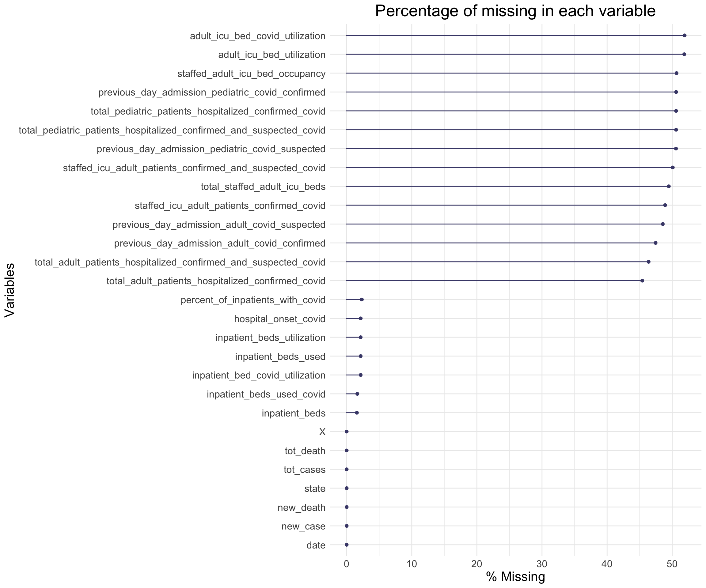

Chapter 4 Missing values
First we can have a quick review of our dataset, we can see clearly that their are many missing values (NA entries) in our dataframe.
4.1 Number of Missing values for each variable
| x | |
|---|---|
| X | 0 |
| date | 0 |
| state | 0 |
| tot_cases | 0 |
| new_case | 0 |
| tot_death | 0 |
| new_death | 0 |
| hospital_onset_covid | 276 |
| inpatient_beds | 201 |
| inpatient_beds_used | 275 |
| inpatient_beds_used_covid | 210 |
| previous_day_admission_adult_covid_confirmed | 6073 |
| previous_day_admission_adult_covid_suspected | 6214 |
| previous_day_admission_pediatric_covid_confirmed | 6478 |
| previous_day_admission_pediatric_covid_suspected | 6474 |
| staffed_adult_icu_bed_occupancy | 6485 |
| staffed_icu_adult_patients_confirmed_and_suspected_covid | 6411 |
| staffed_icu_adult_patients_confirmed_covid | 6261 |
| total_adult_patients_hospitalized_confirmed_and_suspected_covid | 5936 |
| total_adult_patients_hospitalized_confirmed_covid | 5811 |
| total_pediatric_patients_hospitalized_confirmed_and_suspected_covid | 6476 |
| total_pediatric_patients_hospitalized_confirmed_covid | 6476 |
| total_staffed_adult_icu_beds | 6333 |
| inpatient_beds_utilization | 275 |
| percent_of_inpatients_with_covid | 298 |
| inpatient_bed_covid_utilization | 275 |
| adult_icu_bed_covid_utilization | 6644 |
| adult_icu_bed_utilization | 6637 |
14 columns have more than 5,000 missing values.

This plot provides a specific visualiation of the amount of missing data, showing in black the location of missing values, and also providing information on the overall percentage of missing values overall (in the legend), and in each variable.
4.2 Patterns of Missing values
 From the plot above, most of missing values do not show by random, but they have patterns.
 An upset plot from the UpSetR package can be used to visualise the patterns of missingness, or rather the combinations of missingness across cases. To see combinations of missingness and intersections of missingness amongst variables, use the gg_miss_upset function:
An upset plot from the UpSetR package can be used to visualise the patterns of missingness, or rather the combinations of missingness across cases. To see combinations of missingness and intersections of missingness amongst variables, use the gg_miss_upset function:
6467 cases missing those five columns together;
152 cases missing adult_icu_bed_occupancy and adult_icu_bed_covid_utilization_NA.